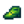

Demiryolu

Demiryolu, Dağın kuzeyinde kalan bir bölgedir. İlk yılın Yaz 3'ünde yolu engelleyen kayalar, bir deprem sonucu yoldan kaldırıldığında erişilebilir hâle gelir. Oyuncu uyandığında "Gece deprem oldu." mesajını alır.
Trenler

Rastgele günlerde 09.00 ile 18.00 arasında bir tren geçebilir. Oyuncu dışarıda ise "Yıldızçiyi Vadisi'nden geçen bir tren var." mesajı ile bir tren düdüğü sesi alır. Trenler, oyuncunun oyunu açtığı ilk günde gelemez.
Bir tren geçerken bir ara sahne oynatılırsa (örn. Büyücü'nün "Kara Tılsım" görevi) tren görünmez olur ancak sesi duyulabilir ve lokomotifin dumanı gözükebilir.
Trenin önünde duran oyuncular hasar görür ve geri tepilir. Oyuncunun tren ile peron arasında takılı kalıp sürekli olarak hasar alıp sağlığını kaybetmesi de mümkündür.
Tren Türleri
Her trende bir lokomotif ve 8 ila 24 vagon bulunur. Vagonlar; kaynak vagonları, yolcu vagonları veya kapalı nakliye vagonları olabilir. Bir tren %10 ihtimalle daha uzun bir tren olabilir ve bu durumda vagonlarının sayısı iki katına çıkar, böylece 48 vagonluk bir tren görmek mümkündür.[1]
Rastgele çıkabilecek beş özel tren türü bulunur:
- Bir Joja treni: üzerinde Joja logosu olan gri vagonlara sahiptir. (%9 ihtimal)
- Bir yolcu treni: yalnızca yolcu vagonlarına sahiptir ve iki kat daha hızlı yol alır. (%10 ihtimal)
- Bir "kömür treni": yaklaşık %70'i kaynak vagonu, %30'u nakliye vagonu olan bir trendir. (%8,1 ihtimal)
- Bir hapis treni: demir parmaklıkları olan mavi vagonlara sahiptir ve iki kat daha hızlı yol alır. (%3,65 ihtimal)
- Bir "yılbaşı treni": hediyelerle dolu kırmızı vagonlara sahiptir. (Yalnızca Kışta %13,85 ihtimal)
Bu tren türlerinin hiçbiri seçilemezse yaklaşık %16'sı kaynak vagonu, %20'si nakliye vagonu ve %64'ü yolcu vagonu olan normal bir tren geçer.[1]
Kaynak Vagonları
Kaynak vagonları olan trenler geçerken yere bazen taşıdıkları şeylerden düşürürler. Taşıdıkları şeye bağlı olarak 4 ila 9 adet ögeler düşürürler.[2] Ögelerin düşmesi için oyuncunun demiryolunda olması ve treni ekranında görebilmesi gerekir.
- Kömür vagonları
 Kömür düşürür.
Kömür düşürür. - Metal vagonları vagon rengine bağlı olarak
 Bakır Cevheri,
Bakır Cevheri,  Demir Cevheri veya
Demir Cevheri veya  Altın Cevheri düşürür.
Altın Cevheri düşürür. - Ahşap vagonları
 Odun düşürür. Düşürdüklerinin %5'i de
Odun düşürür. Düşürdüklerinin %5'i de  Kerestedir.
Kerestedir. - Taş vagonları 2. yılın Bahar 10'una kadar
 Jeot düşürür ve onun ardından
Jeot düşürür ve onun ardından  Yanık Jeot düşürmeye başlar. Kışta ise
Yanık Jeot düşürmeye başlar. Kışta ise  Donuk Jeot düşürür.
Donuk Jeot düşürür. - Tuğla vagonları
 Taş düşürür.
Taş düşürür. - Hediye vagonları nadiren (~%1,5 ihtimalle)
 Gizem Kutusu düşürür.
Gizem Kutusu düşürür.
Kaynak vagonundan öge düşerken %1 ihtimalle yanında  Cüce Pabuçları[2] da düşürebilir. Ortalamada her kaynak vagonunun yaklaşık %6,8 kadar Cüce Pabuçları düşürme ihtimali vardır.
Kaynak vagonları aynı zamanda kompartımanı, çimen, saman veya kutular taşıyabilir. Bunlar öge düşürmez ancak sanki düşürüyormuş gibi Cin Pabuçları düşürme ihtimaline sahiptirler.
Bölgeler
Tren Peronu
Tren peronu, rayların kuzeyindedir. İçinde "Gizemli Qi" görevi için kullanılan boş bir kutu bulunur. Harvey'nin 10 kalp olayı da burada gerçekleşir.
Hamam
Demiryolunun güneybatı tarafında hamam bulunur. Havuzda durdukça enerji ve sağlık yenilenir. Penny'nin 10 kalp olayı da burada gerçekleşir.
Hamamın önünde küçük bir su havuzu bulunabilir. Gizli Not #25'i okuduktan sonra burada Şatafatlı Kolye tutulabilir. Ayrıca 'Manzara' tablosu da burada yakalanabilir. Kışta su donduğu için bunlar suda tutulamaz.
Cadı'nın Bataklığı
Tren peronunun güneybatısındaki mağarada Cadı'nın Bataklığı'na giden bir geçit bulunmaktadır. Bu mağara, Büyücü tarafından verilen görevleri tamamladıktan sonra açılır. Bu görevlerin ilki, Halkevi yığınlarını veya Joja Toplumsal Gelişim Proje Formunu tamamladıktan sonra Demiryolu bölgesine girildiğinde ara sahne oynarak verilir. Bu görevler tamamlandıktan sonra oyuncu mağara ile Cadı'nın Bataklığı'na ışınlanabilir.
Zirve
Zirve, demiryolunun kuzeybatı tarafındaki bir merdivenle ulaşılır. Oyunun başında bu merdivenlerin üstünde oyuncunun kıramayacağı bir kaya mevcuttur. Zirveye mükemmellik elde edildikten sonra girilebilir.
Toplayıcılık
Demiryolu'nda yerde belirebilecek toplanılabilir ögeler şunlardır:[3]
- Baharda:
 Fulya (%45),
Fulya (%45),  Kara Hindiba (%35) ve
Kara Hindiba (%35) ve  Pırasa (%20)
Pırasa (%20) - Yazda:
 Itırşahi (%47),
Itırşahi (%47),  Baharat Meyvesi (%27) ve
Baharat Meyvesi (%27) ve  Üzüm (%27)
Üzüm (%27) - Güzde:
 Çakaleriği (%37),
Çakaleriği (%37),  Böğürtlen (%37) ve
Böğürtlen (%37) ve  Fındık (%25)
Fındık (%25) - Kışta:
 Kristal Meyve (%50) ve
Kristal Meyve (%50) ve  Çiğdem (%50)
Çiğdem (%50)
Toplanılabilir ögelerin çıkabileceği yalnızca 31 konum vardır ve çoğu yabani otlarla, dallarla veya taşlarla kaplıdır. Bu çer çöp temizlendikten sonra gece başı ortalama 0,1 oranla belirirler.[4] Haritada ortaya çıkmaları mümkün olan yerler kırmızı ve magenta karelerde gösterilmiştir; orijinal ağaçlar bulunuyorsa, magenta karelerde %90 daha az doğma şansı vardır çünkü o kareler, ağaçların arkalarında kalır ve görünmeleri zordur.
Eser Noktaları
Demiryolu'nda Eser Noktaları kazılarak bulunabilecek eserler şunlardır:
 Tarih Öncesi Kaval Kemiği (%4-8[5])
Tarih Öncesi Kaval Kemiği (%4-8[5])
Diğer bulunması mümkün ögeler de şunlardır:
- 1-3
 Kil (%19-37[5])
Kil (%19-37[5])  Kayıp Kitap (%20 + %6-12[5]); bütün Kayıp Kitaplar bulunduğunda, Kayıp Kitaplar yerine
Kayıp Kitap (%20 + %6-12[5]); bütün Kayıp Kitaplar bulunduğunda, Kayıp Kitaplar yerine  Karışık Tohumlar çıkmaya başlar.
Karışık Tohumlar çıkmaya başlar.- Yalnızca Kışta:
 Kış Kökü (%24)
Kış Kökü (%24) - Yalnızca Kışta:
 Kar Patatesi (%16)
Kar Patatesi (%16) - 1-3 Taş (%6-12[5])
- 1-3 Bakır Cevheri (%5-11[5])
- Yalnızca Baharda: 2-5
 Pirinç Filizi (5)
Pirinç Filizi (5) - Daha önce bulunmamış bir
 Gizli Not: %3'lük bir şansa kadar, eğer oyuncu büyütece sahip ise.
Gizli Not: %3'lük bir şansa kadar, eğer oyuncu büyütece sahip ise.
Eser noktaları gece başı 0,25 gibi bir oran ile belirir, kışta ise bu oran gece başı 0,4'e çıkar.[6]
Galeri

Tren

Hediye treni

Joja treni
Notlar
- Tren ile sağdaki tünelin arasında durulursa oyuncu takılı kalır ve sağlığı tükenene kadar hasar almaya devam eder.
Harici Linkler
Oyun dosyalarına erişimi olan oyuncular, https://mouseypounds.github.io/stardew-predictor/ linkinde bulunan "Stardew Predictor" aracı ile jeotların içinden çıkabilecek ögeleri önceden görebilir.
Referanslar
- ↑ 1,0 1,1 Train::Train oyun kodunu inceleyin.
- ↑ 2,0 2,1 TrainCar::Draw oyun kodunu inceleyin.
- ↑ Toplanılabilir her öge için, verilen oran o mevsim belirebilen bütün toplanılabilir ögelerin genel oranıdır. Girdi bilgisi Locations.xnb, GameLocation::spawnObjects'deki kod ile çalıştırılmış.
- ↑ Demiryolu'ndaki 4340 kareden 39'u (%0,7) standart toplanılabilir ögelerin belireceği karelerdir. Toplanılabilir ögeler hakkında daha fazla bilgi için Toplayıcılık sayfasını inceleyin.
- ↑ 5,0 5,1 5,2 5,3 5,4 Eser Noktalarından ekstra öge elde etme mevsime bağlıdır. Maksimum şans yaz ve güzdedir. Kışta, bu şans %50 daha az; baharda ise %6 daha azdır. Daha fazla bilgi için Eser Noktası sayfasını inceleyin.
- ↑ Demiryolu'ndaki 4340 kareden 445'i (%10) bahar, yaz ve güzde Eser Noktaları için ortaya çıkma kareleridir. 570'i (%13) kış için ortaya çıkma kareleridir. Daha fazla bilgi için Eser Noktası sayfasını inceleyin.
Geçmiş
- 1.0: Eklendi.
- 1.1: Cadı'nın Barakasına giden mağara eklendi.
- 1.4: Trenler artık daha fazla öge düşürüyor.
- 1.5: Zirveye erişim eklendi. 'Manzara' artık kış değilken hamamın önündeki su havuzunda tutulabilir.
- 1.6: Yılbaşı trenleri artık Gizem Kutusu düşürebilir. Kaynak vagonları artık kereste düşürebilir.
| Mekanlar | |
|---|---|
| Mekanlar | Cadı'nın Bataklığı • Çiftlik Göleti • Çiftlik • Çöl • Dağ • Demiryolu • Gizli Koru • Kafatası Mağarası • Kömürözü Ormanı • Kumsal • Lağım • Madenler • Mağara • Maden Arabası • Mezarlık • Zencefil Adası • Ustalık Mağarası • Mutant Böcek Yuvası • Ormanönü • Otobüs Durağı • Pelikan Kasabası • Taş Ocağı • Taş Ocağı Madeni • Tünel |